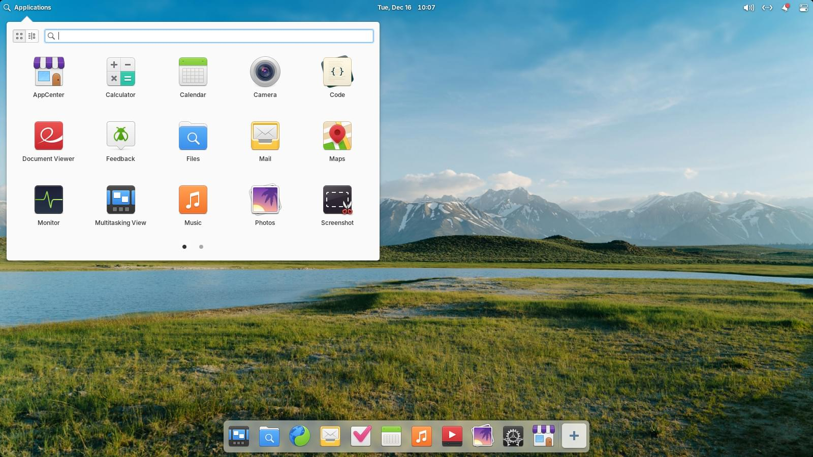
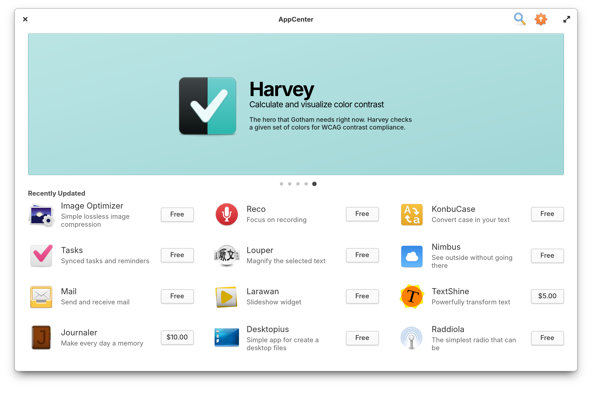
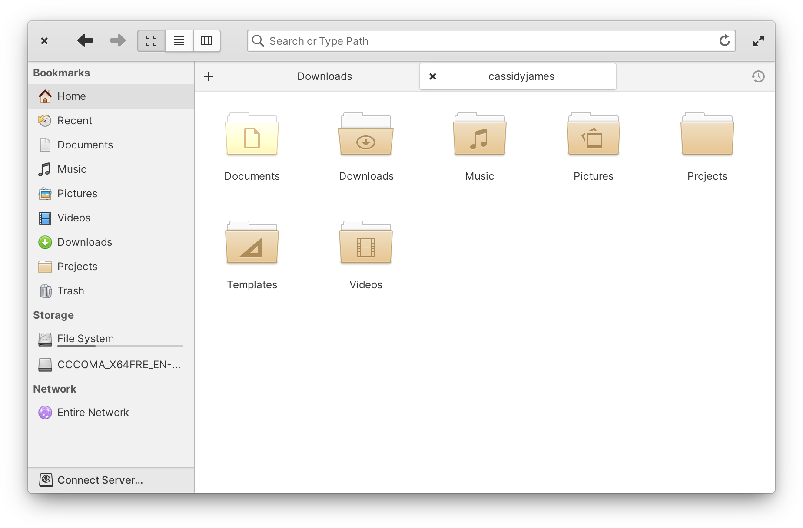
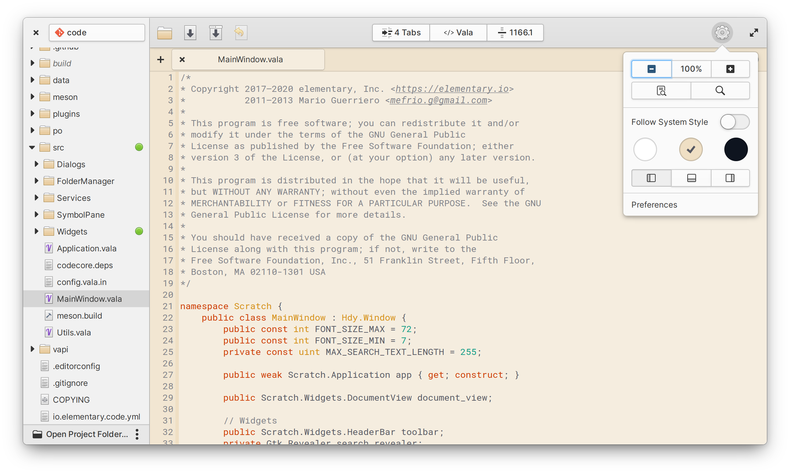
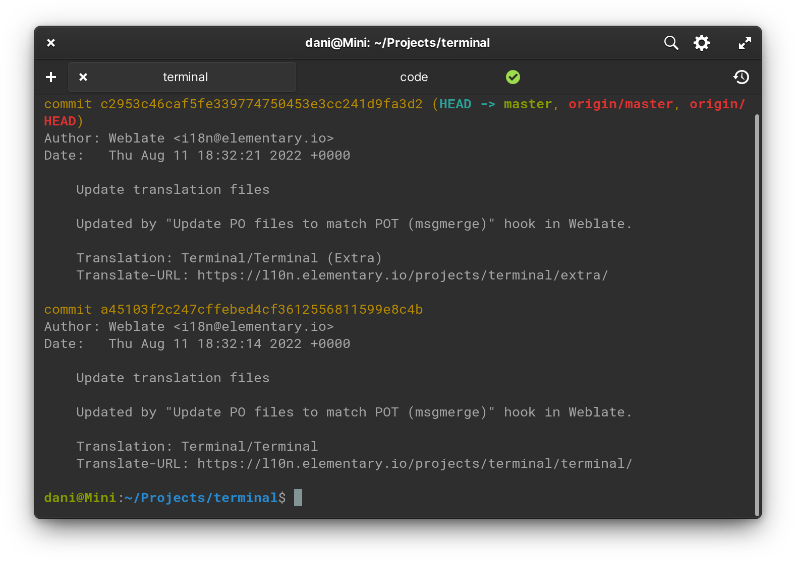
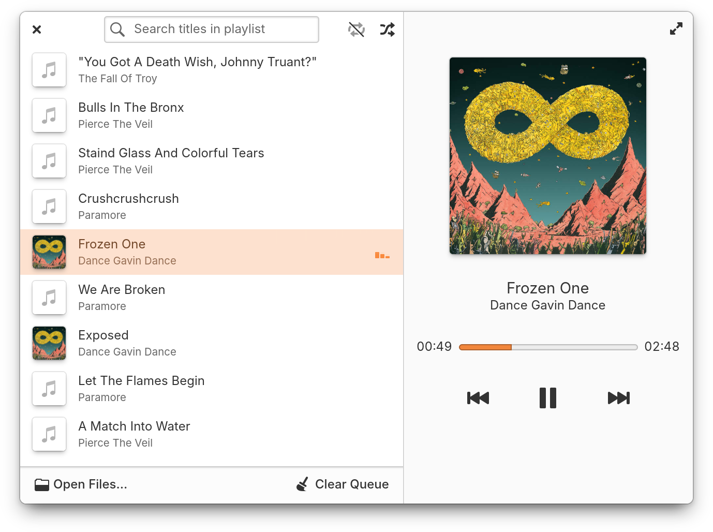
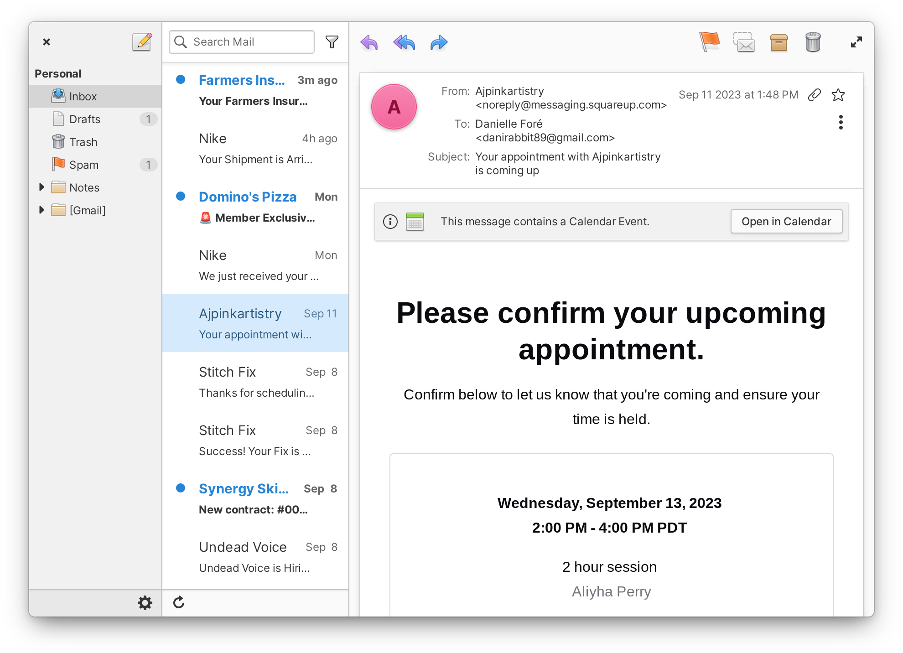
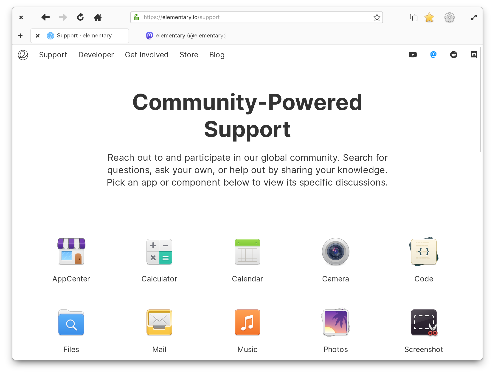

elementary OS
Thoughtful, capable, and ethical computing
Una distribución GNU/Linux elegante, rápida y respetuosa con la privacidad, basada en Ubuntu. Diseñada para ofrecer una experiencia de escritorio pulida e intuitiva.
Conocer más
¿Qué es elementary OS?
elementary OS es una distribución del sistema operativo GNU/Linux diseñada con un enfoque en la usabilidad, el diseño y la ética del software. Su lema, "Thoughtful, capable, and ethical computing" (informática reflexiva, capaz y ética), resume su filosofía: ofrecer un sistema operativo que sea a la vez potente, accesible y respetuoso con la privacidad del usuario.
Como distribución GNU/Linux, elementary OS se construye sobre el núcleo Linux y las herramientas del proyecto GNU, lo que significa que es software libre y de código abierto. Cualquier persona puede descargarlo, usarlo, modificarlo y redistribuirlo sin costo alguno.
Lo que diferencia a elementary OS de muchas otras distribuciones Linux es su énfasis en la experiencia del usuario. Mientras que otras distribuciones priorizan la personalización o la potencia técnica, elementary OS busca ofrecer una interfaz limpia, coherente y fácil de usar, pensada para que el usuario pueda enfocarse en lo que necesita hacer sin distracciones.
El sistema incluye su propio entorno de escritorio llamado Pantheon, una colección de aplicaciones propias diseñadas para integrarse de forma nativa, y AppCenter, una tienda de aplicaciones con un modelo de pago lo que quieras (pay-what-you-want).
Historia de elementary OS
Un recorrido por la evolución de una de las distribuciones Linux más elegantes
Los orígenes
El proyecto elementary comienza como un conjunto de temas y elementos de diseño para Ubuntu. Los desarrolladores crean iconos y temas que buscan mejorar la estética de Linux.
0.1 "Jupiter" — El primer lanzamiento
El 31 de marzo de 2011 se publica la primera versión estable, basada en Ubuntu 10.10. Es la primera vez que elementary OS se presenta como una distribución independiente.
0.2 "Luna" — Maduración
El 10 de agosto de 2013 se lanza Luna, basada en Ubuntu 12.04 LTS. Esta versión trae un rediseño completo del sitio web, un instalador propio y una identidad visual más definida.
0.3 "Freya" — Crecimiento
El 11 de abril de 2015, Freya se lanza basada en Ubuntu 14.04 LTS. Recibe más de 1.2 millones de descargas y populariza el modelo de pago lo que quieras (pay-what-you-want).
0.4 "Loki" — AppCenter
El 9 de septiembre de 2016, Loki introduce AppCenter, la tienda de aplicaciones propia. Es considerado uno de los escritorios Linux más elegantes del momento.
5.0 "Juno" — Un nuevo numerado
El 16 de octubre de 2018, elementary OS cambia a un esquema de numeración mayor. Juno incluye Night Light, ventanas ajustables y mejoras en AppCenter.
5.1 "Hera" — Refinamiento
El 3 de diciembre de 2019, Hera llega con soporte para Flatpak, mejor rendimiento y una interfaz más pulida.
6.0 "Odin" — Modernización
El 10 de agosto de 2021, Odin introduce tema oscuro, colores de acento personalizables, gestos multitáctiles, nuevo instalador y Centro de Notificaciones.
7.0 "Horus" — Actualización mayor
El 31 de enero de 2023, Horus se lanza basada en Ubuntu 22.04 LTS. Enfocado en AppCenter, nuevas funciones y una plataforma de desarrollo mejorada.
8.0 / 8.1 "Circe" — La versión actual
El 26 de noviembre de 2024 se lanza 8.0, basada en Ubuntu 24.04 LTS, con integración de Flathub y mejoras en multitarea. En diciembre de 2025, la versión 8.1 introduce Wayland como sesión predeterminada (Secure Session), soporte ARM64 y escalado fraccionario. La última actualización, 8.1.1, se publicó el 26 de febrero de 2026.
¿En qué distribución está basado?
elementary OS se construye sobre Ubuntu LTS, una de las distribuciones más populares del mundo
GNU/Linux
Núcleo del sistema operativo
Ubuntu LTS
Distribución base con soporte a largo plazo
elementary OS
Entorno gráfico, apps y filosofía propia
¿Qué significa estar basado en Ubuntu?
Estar basado en Ubuntu implica que elementary OS hereda su infraestructura: el gestor de paquetes (APT y dpkg), la compatibilidad con los repositorios de Ubuntu, el kernel de Linux y las actualizaciones de seguridad de Canonical. En la práctica, la mayoría del software diseñado para Ubuntu funciona en elementary OS.
Ventajas de la base Ubuntu LTS
- Estabilidad: Las versiones LTS reciben actualizaciones de seguridad y correcciones durante años.
- Compatibilidad de hardware: Los controladores que funcionan en Ubuntu funcionan en elementary OS.
- Software disponible: Repositorios de Ubuntu, Flatpak y Flathub disponibles de forma nativa.
- Comunidad: Las soluciones y tutoriales de Ubuntu suelen aplicar también aquí.
¿Qué hereda y qué es propio?
Hereda de Ubuntu: Kernel de Linux, sistema APT, repositorios, actualizaciones de seguridad y compatibilidad de hardware.
Es propio de elementary: Entorno Pantheon, gestor de ventanas Gala, apps del sistema (Files, Code, Terminal, Mail...), AppCenter y la filosofía de diseño.
Características que lo hacen diferente
Lo que distingue a elementary OS de otras distribuciones Linux
Diseño minimalista
Una estética limpia y cuidada donde cada elemento visual tiene un propósito. Sin sobrecarga ni elementos innecesarios.
Pantheon Desktop
Un entorno de escritorio propio, construido sobre GTK, con su gestor de ventanas Gala y totalmente integrado con las aplicaciones del sistema.
AppCenter
Tienda de aplicaciones propia con un modelo de pago lo que quieras, donde cada aplicación está revisada y curada por el equipo de elementary.
Integración entre aplicaciones
Las aplicaciones de elementary están diseñadas para funcionar juntas de forma coherente, compartiendo elementos de diseño, atajos y comportamiento.
Privacidad
No recopila datos personales ni hace tratos publicitarios. Se muestran indicadores cuando una app usa el micrófono y los permisos son revisados antes de publicarse.
Facilidad para nuevos usuarios
Curva de aprendizaje suave. Ideal para personas que vienen de Windows o macOS y quieren probar Linux sin complicaciones.
Consistencia visual
Human Interface Guidelines propias que garantizan que todas las aplicaciones se vean y funcionen de manera similar y coherente.
Gestos y atajos
Sistema de gestos multitáctiles y atajos de teclado que facilitan la navegación, el cambio de apps y la productividad.
Actualizaciones y seguridad
Al estar basado en Ubuntu LTS, hereda actualizaciones de seguridad frecuentes e incluye una app de actualización de firmware.
Código abierto
Código fuente completamente abierto y auditable en GitHub. Cualquiera puede contribuir, aprender y redistribuir el sistema.
Galería de imágenes
Imágenes representativas de elementary OS y su entorno Pantheon







Aplicaciones incluidas
Un conjunto cuidadosamente seleccionado de aplicaciones para las tareas cotidianas
Web
Navegador basado en WebKit. Rápido, ligero y respeta tu privacidad. Soporta web apps y es eficiente con la batería.
Cliente de correo con múltiples cuentas, búsqueda rápida, notificaciones y una vista basada en conversaciones.
Files
Gestor de archivos con vista de columnas, pestañas con historial, barra de rutas inteligente y búsqueda integrada.
Terminal
Emulador de terminal con esquemas de colores, pestañas, notificaciones de tareas y protección contra pegado accidental.
Code
Editor de código con autoguardado, carpetas de proyecto, integración Git, resaltado de sintaxis y extensiones.
Music
Reproductor de música con biblioteca organizada por álbum, búsqueda rápida y listas de reproducción.
Photos
Gestor y editor de fotos con importación, organización, edición básica, presentaciones y compartición.
Videos
Reproductor con biblioteca, vista previa en la barra de búsqueda, subtítulos y reanudación de la reproducción.
Calendar
Calendario de escritorio con creación de eventos, lenguaje natural y sincronización con cuentas en línea.
Camera
Aplicación para capturar fotos y video desde la webcam integrada o desde una cámara USB.
Nota: Las aplicaciones anteriores vienen preinstaladas con elementary OS. A través de AppCenter se pueden instalar muchas más aplicaciones —gratuitas o de pago lo que quieras— revisadas y curadas por el equipo de elementary, así como software Flatpak desde Flathub.
¿Quién desarrolla elementary OS?
elementary, Inc.
elementary OS es desarrollado y mantenido por elementary, Inc., una organización de código abierto. El proyecto comenzó como una comunidad de diseñadores y desarrolladores voluntarios y con el tiempo se ha profesionalizado, colaborando con otros proyectos del ecosistema Linux.
Danielle Foré
Fundadora y directora ejecutiva del proyecto. Danielle lidera la visión del producto, el diseño y la dirección general. Ha sido la cara pública de elementary OS desde sus inicios y, tras el cambio de propiedad de 2021, es la única dueña de la empresa.
Cassidy James Blaede
Cofundador y ex CTO. Cassidy fue fundamental en el diseño del entorno Pantheon y las aplicaciones del sistema. En 2021, tras desacuerdos legales, vendió sus acciones a Danielle Foré y dejó la compañía.
Interfaz gráfica: Pantheon
El entorno de escritorio propio de elementary OS, diseñado para ser intuitivo y elegante
Escritorio
Área de trabajo limpia. Las ventanas se organizan con bordes redondeados y sombras suaves.
Panel superior (Wingpanel)
Barra fija en la parte superior. Contiene el menú de aplicaciones (Slingshot) a la izquierda, los indicadores de sistema y el centro de notificaciones a la derecha, con el reloj en el centro.
Dock
Barra de tareas en la parte inferior, completamente reescrita en la versión 8. Muestra aplicaciones fijadas y en ejecución, se oculta con las ventanas maximizadas y permite el cambio rápido entre apps.
Menú de aplicaciones (Slingshot)
Muestra todas las aplicaciones instaladas en una cuadrícula con búsqueda integrada, organizadas por categorías para encontrar lo que necesitas al instante.
Ventanas y Gala
Gala, el gestor de ventanas basado en Mutter, ofrece bordes redondeados, soporte de mosaico lateral, Picture-in-Picture y una vista de multitarea.
Vista de multitarea
Muestra todas las ventanas y espacios de trabajo abiertos. Se accede con un gesto de cuatro dedos o con la tecla Super (Windows).
Configuración del sistema
Panel modular basado en plugins (Switchboard). Permite ajustar pantalla, red, sonido, privacidad, cuentas de usuario y actualizaciones, entre otras opciones.
Notificaciones
Centro de notificaciones integrado con modo "No Molestar", notificaciones persistentes y acciones rápidas desde la propia notificación.
Espacios de trabajo
Múltiples escritorios virtuales para organizar el trabajo. En la versión 8, el conmutador de espacios de trabajo se integra directamente en el Dock.
Atajos de teclado
Super para multitarea, Super+Flechas para el mosaico de ventanas, Ctrl+Alt+T para Terminal. Todos personalizables desde Configuración.
Gestos multitáctiles
Gestos con trackpad o pantalla táctil para cambiar de espacio de trabajo, abrir la multitarea y navegar con fluidez.
¿Para qué sirve elementary OS?
Un sistema operativo versátil para múltiples actividades
Navegar por Internet
Con el navegador Web podés navegar, usar servicios web y aplicaciones en línea de forma segura y fluida.
Estudiar
Ideal para investigar, redactar trabajos, tomar notas y usar herramientas educativas con un sistema libre de distracciones.
Programar
Con Code y Terminal integrados es una gran plataforma para desarrollar. Compatible con las herramientas de desarrollo de Ubuntu.
Trabajar con oficina
LibreOffice está disponible vía AppCenter o Flathub para documentos, planillas y presentaciones compatibles con formatos de Office.
Consumir multimedia
Con Music, Videos y Photos se puede organizar y disfrutar de música, películas y fotografías con una interfaz agradable.
Gestionar archivos
Files permite organizar documentos con una interfaz intuitiva de columnas, pestañas y búsqueda integrada.
Aprender Linux
Una de las mejores distribuciones para iniciarse en el mundo Linux gracias a su interfaz accesible y su enfoque en la facilidad de uso.
¿Qué no es su punto fuerte?
elementary OS no está especialmente orientado al gaming avanzado, a la edición de video profesional ni al uso de software especializado de nicho con dependencias propietarias. Para esas actividades, otras distribuciones o configuraciones específicas pueden ser más adecuadas.
¿Para quién está recomendado?
Ideal para:
- Usuarios que vienen de Windows o macOS y buscan una alternativa elegante
- Personas que buscan una interfaz sencilla y limpia
- Usuarios que priorizan el diseño y la facilidad de uso
- Estudiantes que necesitan un sistema estable y eficiente
- Personas que quieren comenzar con Linux sin una curva de aprendizaje empinada
- Usuarios que usan el ordenador para tareas cotidianas: navegar, correo, documentos
- Equipos con hardware modesto o antiguo que necesitan un sistema ligero
No tan recomendado para:
- Usuarios que necesitan una personalización extrema del escritorio
- Gamers que buscan la máxima compatibilidad con títulos AAA
- Profesionales de edición de video o foto que dependen de software específico
- Usuarios avanzados que requieren control total del sistema desde el primer día
Ventajas y desventajas
Un balance honesto sobre qué ofrece el sistema
Ventajas
- Diseño pulido y coherente en todo el sistema
- Interfaz intuitiva, fácil de adoptar para nuevos usuarios
- Rendimiento ligero, funciona bien en hardware modesto
- AppCenter con modelo de pago lo que quieras y apps curadas
- Aplicaciones propias integradas nativamente
- Basado en Ubuntu LTS: estabilidad y compatibilidad de software
- Código abierto y respetuoso con la privacidad
- Actualizaciones de seguridad frecuentes
- Soporte Flatpak y Flathub integrado
- Comunidad activa y documentación disponible
Desventajas
- Opciones de personalización del escritorio más limitadas (subjetivo)
- Algunas apps de AppCenter pueden ser menos completas que alternativas maduras
- No ideal para gaming avanzado sin configuración adicional
- El conjunto de apps preinstaladas es reducido por diseño
- Su dependencia de Ubuntu LTS retrasa el acceso a versiones nuevas de componentes
- Menor disponibilidad de temas y extensiones de terceros
- Algunas configuraciones de hardware pueden requerir ajustes manuales
- El ritmo de versiones mayores es lento para algunos usuarios (subjetivo)
Comparación con otras distribuciones
elementary OS frente a las distribuciones Linux más populares
| Característica | elementary OS | Ubuntu | Linux Mint | Fedora | Zorin OS |
|---|---|---|---|---|---|
| Base | Ubuntu LTS | Debian | Ubuntu LTS | Fedora (independiente) | Ubuntu LTS |
| Entorno gráfico | Pantheon | GNOME | Cinnamon, MATE, Xfce | GNOME | Zorin DE (GNOME modificado) |
| Facilidad de uso | Muy fácil | Fácil | Muy fácil | Media | Muy fácil |
| Personalización | Limitada | Alta | Alta | Alta | Alta |
| Consumo de recursos | Bajo | Medio | Bajo-Medio | Medio | Medio |
| Público recomendado | Principiantes, diseño | Uso general | Principiantes, migrantes de Windows | Desarrolladores, usuarios intermedios | Migrantes de Windows |
| Tienda de apps | AppCenter (Flatpak) | Snap Store | Software Manager | GNOME Software | Software Store |
| Filosofía / diseño | Minimalista, coherente | Completo, versátil | Familiar, práctico | Moderno, innovador | Familiar, tradicional |
| Curva de aprendizaje | Muy baja | Baja | Muy baja | Media | Muy baja |
¿Cuándo elegir elementary OS?
Elegí elementary OS si valorás la consistencia visual y la simplicidad, y querés un sistema que "simplemente funcione" sin configuración compleja. Es ideal si venís de macOS o buscás una experiencia pulida con pocas opciones que gestionar.
Elegí Ubuntu si querés versatilidad y un ecosistema más amplio. Linux Mint si preferís una interfaz familiar de Windows con personalización. Fedora si buscás tecnología de punta. Zorin OS si querés una migración sencilla desde Windows. Cada una tiene fortalezas según tus prioridades.
Datos rápidos
Versiones de elementary OS
Hacé clic en cada versión para ver los detalles
0.1 "Jupiter"
31 de marzo de 2011La primera versión estable de elementary OS, basada en Ubuntu 10.10. Presentó el entorno Pantheon con sus primeras aplicaciones: Midori (navegador), Exaile (música) y Scratch (editor de código). El diseño ya mostraba el enfoque minimalista que definiría al proyecto.
0.2 "Luna"
10 de agosto de 2013Rediseño completo del sistema y del sitio web. Incluyó un instalador propio, nuevas aplicaciones y una identidad visual más definida. Luna consolidó a elementary OS como una alternativa seria en el ecosistema Linux.
0.3 "Freya"
11 de abril de 2015Recibió más de 1.2 millones de descargas. Originalmente se llamaría "Isis", pero se cambió para evitar una connotación negativa. Introdujo mejoras de rendimiento y el popular modelo de pago lo que quieras.
0.4 "Loki"
9 de septiembre de 2016Uno de los lanzamientos más importantes: introdujo AppCenter, reemplazó Midori por GNOME Web, creó Mail (fork de Geary) y mejoró las notificaciones. Recibió elogios por su elegancia.
5.0 "Juno"
16 de octubre de 2018Cambió el esquema de numeración para evitar confundir versiones estables con versiones de desarrollo. Incluyó Night Light, ventanas ajustables y Housekeeping. Forbes lo calificó de "absolutamente hermoso".
5.1 "Hera"
3 de diciembre de 2019Versión de refinamiento que añadió soporte Flatpak de fábrica, mejoró el rendimiento general, pulió la interfaz y actualizó las aplicaciones del sistema.
6.0 "Odin"
10 de agosto de 2021Actualización mayor con tema oscuro, colores de acento personalizables, gestos multitáctiles, nuevo instalador, Centro de Notificaciones, cuentas en línea (IMAP/CalDAV) y actualización de firmware.
6.1 "Jólnir"
20 de diciembre de 2021Actualización menor de Odin con correcciones y mejoras de rendimiento. Durante este período se produjo el cambio de propiedad: Cassidy James Blaede vendió sus acciones a Danielle Foré.
7.0 "Horus"
31 de enero de 2023Actualización mayor basada en Ubuntu 22.04 LTS. Se enfocó en mejorar AppCenter, añadir nuevas configuraciones y pulir la plataforma de desarrollo, con mejor integración de Flatpak.
8.x "Circe" (8.0 / 8.1)
26 nov 2024 / 22 dic 2025La versión más reciente. 8.0 introdujo multitarea mejorada, integración de Flathub y diseño inclusivo. 8.1 trajo Wayland como sesión predeterminada (Secure Session), soporte ARM64, escalado fraccionario, las apps Monitor y Maps, efecto blur-behind y un workspace en el Dock. Usa kernel 6.14 y Mesa 25. La última actualización, 8.1.1, se publicó el 26 de febrero de 2026.
Fuentes
Información verificada a partir de fuentes oficiales y confiables
Sitio oficial
elementary.io
Blog oficial
blog.elementary.io
Repositorio GitHub
github.com/elementary
Página de código abierto
elementary.io/open-source
Guía de instalación
elementary.io/docs/installation
AppCenter en línea
appcenter.elementary.io
Política de privacidad
elementary.io/privacy
Wikipedia (referencia complementaria)
en.wikipedia.org/wiki/Elementary_OS